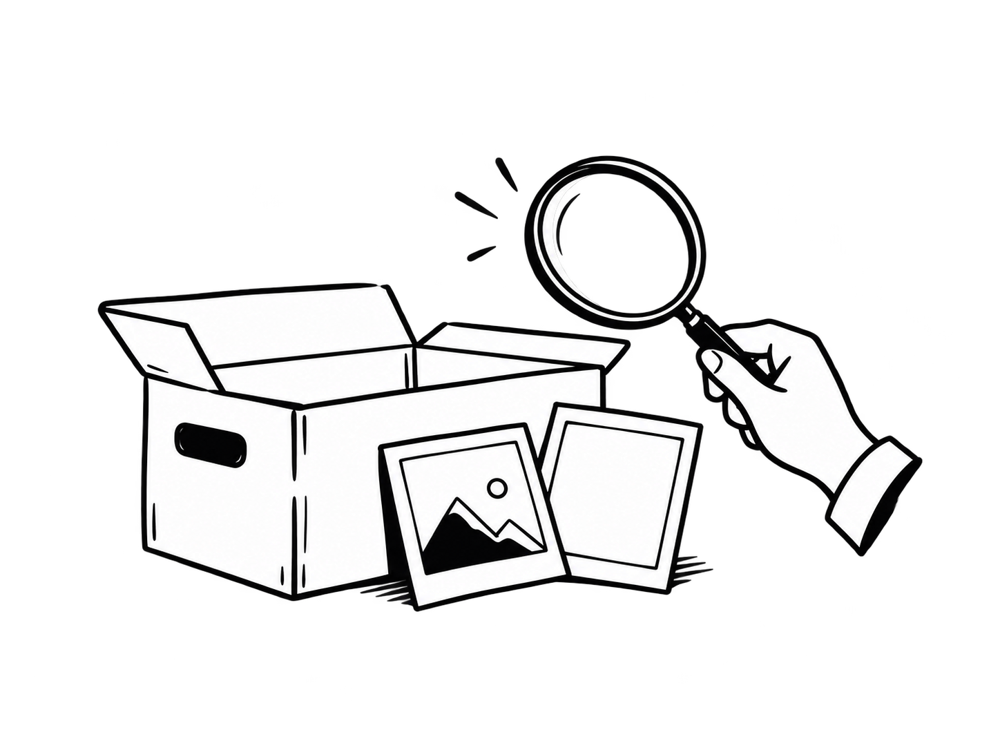

正在加载预览…
已忽略
收集、筛选并保存页面中的图片。
优先读取页面资源·保留加载失败的图片
阈值按网站保存；未配置项依次使用远程规则和全局默认，还原按钮恢复继承。0 取消限制，未知尺寸或体积仍保留。
排除匹配元素及其子树中的图片，支持多个选择器（每行一条或逗号分隔）。按当前网站域名保存。
粘贴 DevTools → Copy XPath / Copy full XPath。仅提取主文档匹配节点及子树中的图片，再应用其他筛选；留空扫描全页。

打开一个网页，再点击右上角重新扫描。
点击卡片切换选择，拖动鼠标框选追加；按住 Ctrl / ⌘ 框选反选，Esc 取消本次框选。
未配置未配置